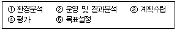
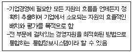
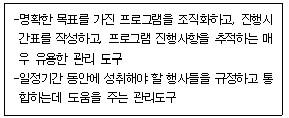

사무자동화산업기사 (2007-05-13 기출문제)
1과목: 사무자동화 시스템
1. 사무자동화의 배경요인 및 필요성이 아닌 것은?
- 고생산성과 고설비투자
- 문서작성비 및 보관비 상승
- 컴퓨터 기술과 통신기술의 발전
- 고학력 노동자의 증가와 사무관리의 질적인 효율성 필요
(정답률: 80%)

2. 사무자동화의 주요기능 중에서 문서의 작성, 배포, 보관의 신속화, 정확도의 향상을 위한 기능은?
- 다큐메이션 기능
- 커뮤니케이션 기능
- 정보이용 기능
- 자동업무처리 기능
(정답률: 48%)
3. 다음 중 사무자동화의 목적으로 거리가 가장 먼 것은?
- 사무 생산성의 향상
- 효과적인 정보관리
- 의사소통
- 사무처리 시간의 단축
(정답률: 86%)
4. Master File의 변경 사항을 일시적으로 저장하고 있는 파일을 무엇이라 하는가?
- Transaction File
- Work File
- History File
- Program File
(정답률: 67%)
5. 기억장치 배치 전략 중 새로 반입된 프로그램을 주기억장치 내의 분할된 공간 중 적재시 단편화 공간이 가장 크게 발생하는 공간에 배치하는 방식은?
- 최초적합(First-Fit) 방식
- 최적적합(Best-Ffit) 방식
- 최악적합(Worst-Ffit) 방식
- 최후적합(Last-Fit) 방식
(정답률: 86%)
6. 다음 중 마이크로필름의 특성이 아닌 것은?
- 사용 용도에 따라 롤필름과 시트필름으로 나눈다.
- 보존이 반영구적이다.
- 빛에 민감하여 다루기가 어렵다.
- 기밀유지가 용이하다.
(정답률: 74%)
7. 뉴미디어의 특징에 관한 설명 중 옳지 않은 것은?
- 정보를 주고받는 대화형식의 통신으로 상호 작용성이 있다.
- 개인이 필요한 시기에 메시지를 보내고 받을 수 있는 비동시성이 있다.
- 전기통신계통 미디어, 영상, 화상미디어가 많이 사용된다.
- 뉴미디어는 주로 단방향 통신으로 메시지를 전달한다.
(정답률: 66%)
8. 사용자가 보조기억장치의 전체용량에 해당하는 기억장소를 컴퓨터가 가지고 있는 것으로 생각하여 주기억장소의 용량보다 큰 프로그램을 작성할 수 있도록 하는 개념의 메모리는?
- Cache Memory
- Virtual Memory
- Associate Memory
- Buffer Memory
(정답률: 71%)
9. 1면에 100개의 트랙과 트랙당 8개의 섹터가 있는 양면 기록이 가능한 디스크의 경우 섹터 당 4000bit씩 수록한다면 이 디스크의 총 용량은 몇 byte 인가?
- 600000byte
- 700000byte
- 800000byte
- 900000byte
(정답률: 88%)
10. 인트라넷(Intranet)에 대한 설명으로 옳지 않은 것은?
- 별도의 통신망을 구축하지 않더라도 세계 어느 곳에서도 자신이 속한 조직의 정보시스템을 사용할 수 있다.
- 인터넷 기술 등을 이용하여 조직 내부 업무를 통합하는 정보시스템을 말한다.
- 통신망이나 통신환경의 일종이다.
- 조직 내·외부의 정보를 결합하기 쉽다는 장점이 있다.
(정답률: 59%)
11. 다음 중 텔레텍스트(Teletext)에 대한 설명으로 옳은 것은?
- 전화망 또는 공중 데이터 통신망을 통해서 일반 가정의 TV수신기를 정보센터의 컴퓨터와 결합하여 이용자의 요구에 대응하는 문자, 도형 등의 화상 정보로 TV 화면상에 제공하는 서비스
- 텔레비전 방송의 전파 틈을 이용하여 뉴스나 일기예보, 흥행안내 등을 문자, 도형 정보로 비쳐주는 방송 시스템
- 기존의 텔렉스에 워드 프로세서 기능을 추가하여 문서의 편집, 저장 등의 처리 기능을 가진 단말기의 문서 통신 서비스
- 단문메시지 서비스라고도 한다.
(정답률: 76%)
12. 프로그램이 프로세서에 의해 수행되는 속도와 프린터에서 결과를 인쇄하는 속도와는 많은 차이가 나는데, 시스템의 효율성을 높이는 방법으로 출력할 데이터를 프린터로 직접 보내는 것이 아니라, 디스크에 임시로 보관했다가 이 디스크로부터 저장된 내용을 출력하게 하는 기법을 무엇이라 하는가?
- Spooling
- Multiplexer
- Buffering
- DASD
(정답률: 86%)
13. 다음 중 상용 데이터베이스 관리시스템에 포함되지 않는 것은?(단, 개인사용 시에 한함)
- ORACLE
- DB/2
- SYBASE
- MySql
(정답률: 74%)
14. 사무자동화 수행방식 중 하향식(Top-Down) 접근방식의 특징에 해당하는 것은?
- 경영자가 요구하는 최적의 시스템을 구축할 수 있는 방식이다.
- 기업의 최하위 단위부터 자동화하여 그 효과를 점차 증대시키는 방식이다.
- 점진적인 사무자동화의 추진으로 기본 조직에 거부 반응이 최소화된다.
- 시행 착오가 빈번하여 전체적인 추진 시행에 어려움이 크다.
(정답률: 62%)
15. 다음의 보기에서 사무자동화의 추진 단계를 올바르게 나열한 것은?

- ① → ② → ③ → ⑤ → ④
- ① → ③ → ② → ⑤ → ④
- ① → ⑤ → ③ → ② → ④
- ① → ⑤ → ② → ③ → ④
(정답률: 79%)
16. 캐시 메모리(Cache Memory)의 설명으로 옳은 것은?
- 컴퓨터의 처리속도를 빠르게 하기 위한 임시 메모리이다.
- 많은 데이터를 보조기억장치에서 한 번에 가져온다.
- 보조기억장치의 용량에 해당하는 기억장소를 가진 것처럼 큰 프로그램을 작성할 수 있도록 한다.
- 데이터의 영구저장을 위해서 사용되는 보조기억장치이다.
(정답률: 79%)
17. 다음 내용이 설명하고 있는 것은?

- ERP
- MIS
- EDI
- CRM
(정답률: 68%)
18. 자료 송수신 기기(시스템)가 아닌 것은?
- 팩시밀리
- 전자우편
- EDI
- 전자출판
(정답률: 54%)
19. 다음 중 충격식 프린터에 해당하는 것은?
- 라인 프린터
- 레이저 프린터
- 열전사 프린터
- 잉크젯 프린터
(정답률: 85%)
20. 방화벽, 침입탐지시스템, 가상사설망 등의 보안 솔루션을 하나로 모은 통합 보안 관리 시스템은?
- FIREWALL
- VPN
- ESM
- IDS
(정답률: 57%)
2과목: 사무경영관리 개론
21. 과학적 사무관리의 목표로 가장 거리가 먼 것은?
- 인원의 감축
- 생산성 증대
- 능률의 향상
- 낭비의 배제
(정답률: 90%)
22. 다음 중 사무관리 기능으로 가장 거리가 먼 것은?
- 경영활동의 보조기능
- 정보처리 기능
- 신속한 의사결정 기능
- 조직체의 각 활동을 결합하는 기능
(정답률: 61%)
23. 일반 사무시의 환경에서 소음의 허영 한도는 어느 정도 유지하는 것이 좋은가? (단, ISO의 권고 기준)
- 25 데시벨(dB)
- 55 데시벨(dB)
- 75 데시벨(dB)
- 1⑤ 데시벨(dB)
(정답률: 79%)
24. 사무표준의 구비조건으로 틀린 것은?
- 사무표준은 정확해야 한다.
- 사무작업내용과 근무조건을 분석하기 전에 만들어야한다.
- 주기적으로 재검토하여 수정하여야 한다.
- 실제적용에 무리가 없고 당사자인 사무원들이 받아 들일 수 있어야 한다.
(정답률: 55%)
25. 다음 중 문서관리 목표로 가장 알맞은 것은?
- 표준성, 저장성, 폐기용이성
- 표준성, 신속성, 경제성, 용이성
- 신속성, 동시성, 친근성
- 경제성, 고속성, 폐기용이성
(정답률: 77%)
26. 사무 관리의 기본 계획에 관한 내용이 아닌 것은?
- 자료(데이터) 양식의 결정
- 사무량의 예측
- 사무처리 방식의 결정
- 자동화 시스템의 경정
(정답률: 45%)
27. 프로그램을 유형물에 고정시켜 새로운 창작성을 더하지 아니하고 다시 제작하는 것을 무엇이라 하는가?
- 개작
- 복제
- 저작
- 가작
(정답률: 78%)
28. 목표에 의한 관리의 효과로서 하급자에 대한 효과가 아닌 것은?
- 하급자가 담당하는 일의 목표가 명확하기 때문에 역할 갈등을 느끼지 않는다.
- 하급 작업자에 대한 평가방법의 약점을 극복할 수 있다.
- 권한과 책임의 영역이 명확해진다.
- 직무를 통해서 개인의 욕구를 충족시킬 수 있다.
(정답률: 37%)
29. 프로그램의 저작권은 어느 때부터 발생하는가?
- 프로그램이 사용된 때
- 프로그램이 창작된 때
- 프로그램이 등록된 때
- 프로그램이 활용된 때
(정답률: 56%)
30. 자료의 검색·보존에 사용되는 사무기기는?
- LAN
- 광디스크 시스템
- 원격지 회의 시스템
- FAX
(정답률: 61%)
31. “조직 구성원의 능력이나 사정 등을 고려하지 않고 해야 할 일(to work ought to be done)을 중심으로 조직을 구성해야 한다.” 라는 것은 다음 중 어느 것에 대한 설명인가?
- 개인의 원칙
- 책임과 권한의 원칙
- 기능화의 원칙
- 관리 한계의 원칙
(정답률: 45%)
32. 국가에서 추진하고 있는 5대 국가 기간 전산망(정보통신망)이 아닌 것은?
- 행정 전산망
- 경제 전산망
- 공안 전산망
- 국방 전산망
(정답률: 71%)
33. 사무관리의 기능과 그에 대한 설명으로 잘못된 것은?
- 계획화 : 목적을 달성하기 위해 미래에 대한 전망이나 예측을 하는 것
- 조직화 : 계획을 실현하기 위한 필요조건과 관계를 구축해 나가는 것
- 통제화 : 계획에 준한 기준을 설정하는 것
- 조정화 : 주어진 목적을 달성하기 위해 직원과 부하들을 지도하는 것
(정답률: 73%)
34. 다음 중 워크샘플링(Work Sampling)법에 대한 설명으로 옳은 것은?
- 사이클이 짧고 반복 작업에 적합하다.
- 책상에서 비용을 전부 측정할 수 있다.
- 임의의 시간 간격으로 관측하여 시간적 구성비율을 통계적 으로 추측하는 방법이다.
- 과거의 실적에 준하여 기억을 더듬으며 업무마다 시간치를 측정하는 방법이다.
(정답률: 59%)
35. 사무를 계획할 때 요구되는 요소로 가장 거리가 먼 것은?
- 목표
- 스케줄
- 예산
- 홍보
(정답률: 90%)
36. 다음 내용이 설명하는 사무통제를 위한 관리 도구로 올바른 것은?

- 절차도표
- 간트차트
- 자동독촉제도
- PERT
(정답률: 57%)
37. 사무실의 책상 배치 방식 중 대향식에 대한 설명으로 옳지 않은 것은?
- 점유 면적이 적다.
- 감독하기에 편리하다.
- 전화기를 공동으로 사용할 수 있다.
- 직무상 의사소통이 원활하다.
(정답률: 69%)
38. 다음 중 EDI 효과라고 볼 수 없는 것은?
- 거래 시간 단축
- 업무처리 오류 감소와 비용 절감
- 복잡한 업무의 처리 용이성
- 사회 간접 효과 제공
(정답률: 24%)
39. 다음 중 사무진행의 통제수단 중 하나인 보고를 급하게 할 때 보고하는 순서로 올바른 것은?
- 이유 → 경과 → 결론
- 결론 → 이유 → 경과
- 경과 → 이유 → 결론
- 이유 → 결론 → 경과
(정답률: 76%)
40. 1Gbyte의 USB 메모리에 저장할 수 있는 최대 한글의 글자 수는? (단, 한글 1자를 저장하기 위해서는 2byte가 필요하다.)
- 215
- 220
- 229
- 230
(정답률: 57%)
3과목: 프로그래밍 일반
41. C 언어에서 자료형 선언시 사용되는 것이 아닌 것은?
- long
- char
- double
- integer
(정답률: 79%)
42. C 언어의 관계연산자 중 “같지 않다”의 의미를 갖는 것은?
- !=
- I I
- <=
- >>=
(정답률: 95%)
43. 인터프리터 기법을 사용하는 경우의 특징이 아닌 것은?
- 사용상에 있어서 융통성(Flexibility)이 있다.
- 기억장소가 추가로 필요하다.
- 프로그램을 한 줄씩 번역하여 곧바로 실행시킨다.
- 반복문이 많을 경우 컴파일 기법에 비하여 유리하다.
(정답률: 71%)
44. 포인터 자료형에 대한 설명으로 옳지 않은 것은?
- 고급언어에서는 사용되지 않고 저급언어에서 주로 사용되는 기법이다.
- 객체를 참조하기 위해 주소를 갓으로 하는 형식이다.
- 커다란 배열에 원소를 효율적으로 저장하고자 할 때 이용한다.
- 하나의 자료에 동시에 많은 리스트의 연결이 가능하다.
(정답률: 52%)
45. 로더의 기능이 아닌 것은?
- Allocation
- Linking
- Compile
- Relocation
(정답률: 82%)
46. 단항(Unary) 연산에 해당하는 것은?
- OR
- AND
- XOR
- NOT
(정답률: 87%)
47. 예약어 사용의 특징이 아닌 것은?
- 프로그램 읽기가 용이하다.
- 번역 과정의 속도가 느리다.
- 오류 회복이 용이하다.
- 프로그램의 신뢰성이 향상된다.
(정답률: 57%)
48. 특별한 정보는 갖고 있지 않으나, 판독성을 향상시키기 위하여 사용하는 구문 요소는?
- 핵심어
- 예약어
- 잡음어
- 연산식
(정답률: 67%)
49. 프로그램에서 변수들이 갖는 속성이 완전히 결정되는 시간을 무엇이라 하는가?
- 컴파일 시간(Compile Time)
- 바인딩 시간(Binding Time)
- 실행 시간(Run Time)
- 로드 시간(Load Time)
(정답률: 48%)
50. 컴파일러와 인터프리터의 가장 큰 차이점은?
- 예약어의 사용
- 프로그램의 신뢰도
- 목적 프로그램의 생성
- 원시 프로그램의 생성
(정답률: 57%)
51. 연산기호가 오퍼랜드들의 다음에 오는 표기법은?
- Prefix 표기법
- Postfix 표기법
- Infix 표기법
- Outfix 표기법
(정답률: 54%)
52. 일반적 프로그래밍 언어에서 다중 택일문에 해당하지 않는 것은?
- 계산형 GOTO문
- CASE문
- SWITCH문
- FOR문
(정답률: 41%)
53. 구조화된(Structured) 순서 제어문과 가장 거리가 먼 것은?
- IF문
- GOTO문
- CASE문
- SWITCH문
(정답률: 48%)
54. 상향식(Bottom-Up) 파서에 해당하는 것은?
- Predictive Parser
- LL Parser
- Recursive Descent Parser
- Shift Reduce Parser
(정답률: 73%)
55. C 언어에서 문자열을 출력하기 위해 사용되는 것은?
- %x
- %d
- %s
- %h
(정답률: 80%)
56. 부작용 현상(Side Effect)에 대한 설명으로 옳은 것은?
- 실행시간 단축의 효과를 말한다.
- 시분할 체제에서만 발생한다.
- 연산의 결과로 예상할 수 없을 정도로 다른 변수의 값이 변하는 경우를 의미한다.
- 함수형 언어에서도 부작용 현상이 발생한다.
(정답률: 58%)
57. 시스템 프로그래밍 언어로서 가장 적당한 것은?
- C
- COBOL
- PASCAL
- FORTRAN
(정답률: 82%)
58. 인터프리터(Interpreter) 기법을 사용하는 언어는?
- BASIC
- C
- FORTRAN
- COBOL
(정답률: 53%)
59. 운영체제의 제어 프로그램(Control Program)에 해당하는 것은?
- 언어번역(Language Translator) 프로그램
- 서비스(Service) 프로그램
- 자료관리(Data Management) 프로그램
- 문제(Problem) 프로그램
(정답률: 48%)
60. 주기억 장치에서 가장 오랫동안 사용되지 않은 페이지를 교체할 페이지로 선택하는 교체 알고리즘은?
- OPT
- LFU
- FIFO
- LRU
(정답률: 69%)
4과목: 정보통신 개론
61. 다음 중 정보통신시스템에서 통신처리 기능과 가장 밀접한 것은?
- 각종 정보처리 기능
- 속도 및 프로토콜 변환 기능
- 변·복조 및 다중화 기능
- 통신망의 효율적인 관리 기능
(정답률: 55%)
62. 정보통신시스템의 구성 요소에 해당하는 용어가 잘못 표기된 것은?
- DTE : 데이터 단말장치
- CCU : 공통신호장치
- DCE : 데이터 회선종단장치
- MODEM : 변복조장치
(정답률: 48%)
63. 데이터 전송에서 한 문자의 전송시마다 스타트 비트와 스톱 비트를 삽입하여 전송하는 방식은?
- 동기식
- 비동기식
- 베이스밴드식
- 혼합동기식
(정답률: 47%)
64. LAN의 특성에 대한 설명 중 틀린 것은?
- 음성, 데이터, 화상정보를 전송할 수 있다.
- LAN 프로토콜은 OSI 참조모델의 상위층에 해당된다.
- 전송방식으로 베이스밴드와 브로드밴드 방식이 있다.
- 광케이블 및 동축케이블도 사용 가능하다.
(정답률: 62%)
65. 다음 중 광섬유 케이블의 특성과 거리가 먼 것은?
- 저손실성이다.
- 광대역성이다.
- 무유도성이다.
- 보안성이 취약하다.
(정답률: 90%)
66. HDLC(High-Level Data Link Control)에 대한 설명 중 옳지 않은 것은?
- 비트지향형의 프로토콜이다.
- 제어부의 확장이 가능하다.
- 데이터링크 계층의 프로토콜이다.
- 통신방식으로 전이중방식이 불가능하다.
(정답률: 64%)
67. LAN을 분류할 때 네트워크 위상(Topology)에 따른 것이 아닌 것은?
- Bus 형
- Star 형
- Packet 형
- Ring 형
(정답률: 83%)
68. 아날로그 신호를 디지털 전송회선으로 전송하기 위해 디지털 형태로 변환시키고, 또한 디지털 형태를 원래의 아날로그 신호로 복구시키는 장치는?
- 모뎀
- 코덱
- 멀티플랙서
- 집중화기
(정답률: 72%)
69. TCP/IP 상에서 운용되는 응용 프로토콜이 아닌 것은?
- FTP
- Telnet
- SMTP
- SNA
(정답률: 62%)
70. 다음 중 HDLC의 데이터 전달모드가 아닌 것은?
- 표준 균형모드
- 정규 응답모드
- 비동기 균형모드
- 비동기 응답모드
(정답률: 54%)
71. 다음 중 디지털 정보의 변조방식에 해당되지 않는 것은?
- ASK
- FSK
- PSK
- VSB
(정답률: 90%)
72. 변조속도가 1200[baud]일 때, 쿼드비트(Quardbit)를 사용하는 경우 전송속도는 몇 [bps]인가?
- 1200
- 2400
- 3600
- 4800
(정답률: 81%)
73. IP 프로토콜(IP:Internet Protocol)은 OSI 계층 중 어느 계층에 해당 되는가?
- 데이터링크 계층
- 네트워크 계층
- 트랜스포트 계층
- 세션 계층
(정답률: 55%)
74. 다음 중 인터네트워킹(Internetworking) 장비에 해당하지 않는 것은?
- 브리지
- 라우터
- 게이트웨이
- 모뎀
(정답률: 66%)
75. 다음 중 음성신호를 PCM(Pulse Code Modulation) 방식을 통해 송신측에서 디지털 신호로 변환하는 과정이 옳은 것은?
- 표본화→양자화→부호화
- 부호화→양자화→표본화
- 양자화→표본화→부호화
- 표본화→부호화→양자화
(정답률: 87%)
76. 이동통신망에서 통화중인 이동국이 현재의 셀에서 벗어나 다른 셀로 진입하는 경우, 셀이 바뀌어도 중단 없이 통화를 계속할 수 있게 해주는 것은?
- 핸드오프(Hand Off)
- 다이버시티(Diversity)
- 셀 분할(Cell Splitting)
- 멀티플렉싱(Multiplexing)
(정답률: 76%)
77. 수신기 버퍼의 오버플로우(Overflow)를 예방하기 위한 것으로 데이터 프레임의 전송률을 조정하는 것을 무엇이라고 하는가?
- 흐름 제어
- 접속 제어
- 오류 제어
- 비트 제어
(정답률: 85%)
78. ITU-T 권고안 시리즈 중 전화망을 통한 데이터전송에 관한 사항을 규정한 것은?
- I
- Q
- V
- X
(정답률: 46%)
79. 다음 중 IEEE 802.6에서 표준화 된 이중 버스로 구성된 통신망의 규격은?
- FDDI
- DQDB
- QAM
- CSMA/CD
(정답률: 34%)
80. 다음 중 두 개체 간에 통신 속도를 조정하거나 메시지의 전송 및 순서에 대한 특성을 가리키는 프로토콜의 기본 요소는?
- 구문(Syntax)
- 의미(Semantics)
- 타이밍(Timing)
- 패킷(Packet)
(정답률: 61%)